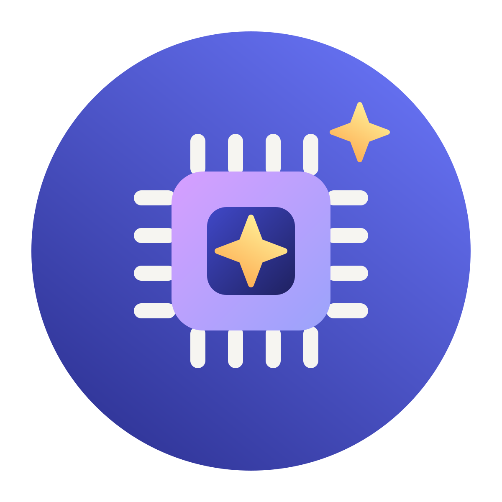

01
Agir sur la cause de la difficulté
Repérer si le blocage vient de la notion travaillée ou d’un prérequis plus ancien.
Quatre composantes pour proposer la bonne aide au bon moment
Notre graphe de connaissances relie chaque objectif aux connaissances, capacités et prérequis nécessaires.
Chaque connaissance peut être reliée à des explications, modelages, exercices, activités guidées et rétroactions.
Des workflows pédagogiques organisent les contenus selon l’intention de l’enseignant et les besoins observés.
Les parcours peuvent être adaptés aux programmes, progressions, niveaux, langues et contextes éducatifs concernés.
L’enseignant sélectionne ou construit le parcours correspondant à son intention pédagogique.
Objectif d’apprentissage
Les réponses et les activités réalisées alimentent un diagnostic continu.
Niveau de maîtrise
Exemple illustratifLa plateforme recommande les explications et activités adaptées aux besoins identifiés.
Prérequis à consolider
Les tableaux de bord aident l’enseignant à repérer les élèves ou notions qui nécessitent une intervention.
Suivi de la classe
Repérer si le blocage vient de la notion travaillée ou d’un prérequis plus ancien.

Mobiliser les explications, modelages et activités correspondant au besoin observé.

Choisir l’objectif pédagogique et décider des interventions à mener.

Chez Édumalin, l’intelligence artificielle n’a pas vocation à produire librement des contenus ni à décider à la place de l’enseignant. Elle contribue à analyser des informations d’apprentissage structurées et à sélectionner, selon des règles paramétrées, les ressources les plus pertinentes pour le parcours de l’élève. Cette approche privilégie la qualité pédagogique, la traçabilité des choix et une utilisation raisonnée de la technologie.
La plateforme peut accueillir des contenus Édumalin, des contenus partenaires ou des ressources adaptées à un projet. Les parcours sont structurés en fonction des programmes, niveaux, langues et objectifs du contexte concerné.
Édumalin propose un parcours de prise en main structuré, combinant ressources en ligne, onboarding guidé, suivi des usages et interventions de l’équipe lorsque le contexte ou l’ampleur du projet le nécessite.